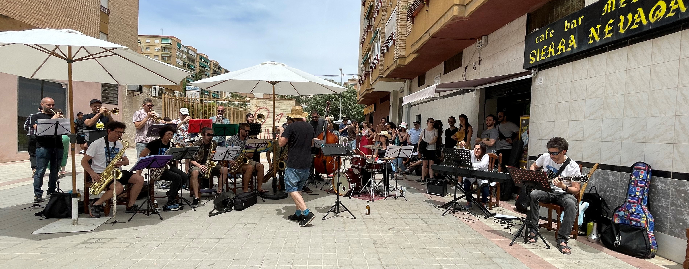
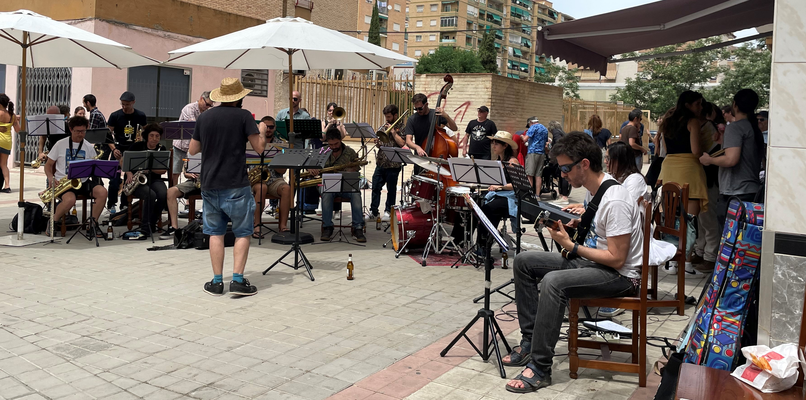
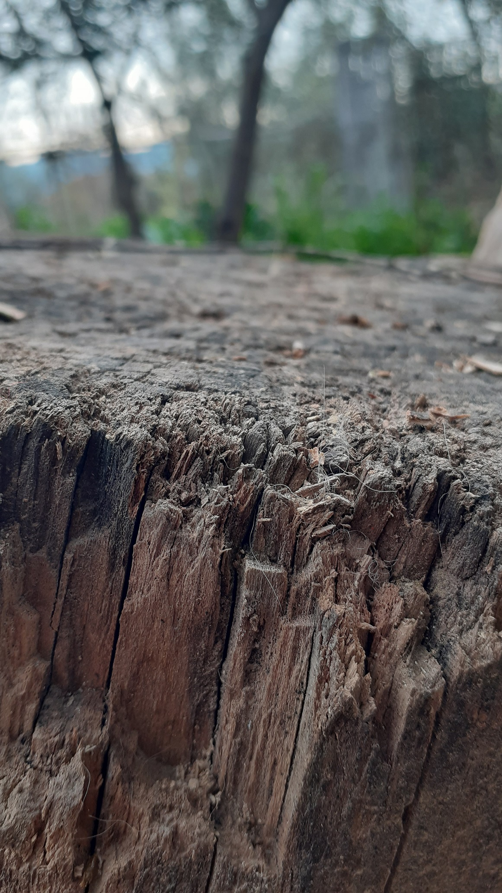

Alejandro Tamayo y Miguel de Gemma reúnen en el año 2020 a varios músicos de bagaje heterogéneo con la idea de generar una orquesta de jazz cuyos pilares fundamentales fueran el compromiso con el ensayo y el estudio, el disfrute y la difusión de la música de repertorio tradicional de big band. 
De este impulso nace La Vin! Band, formada por 27 músicas y músicos que semanalmente trabajan por crecer personal y colectivamente, ampliando un repertorio que abarca desde el swing más clásico de Duke Ellington o Count Basie hasta el latin o el funk. 
Desde su nacimiento y hasta la fecha LaVin! Band ha tocado en espacios como el Encuentro de Big Bands de Priego de Córdoba, el Festival Internacional de Swing de Monachil o el Teatro Isabel la Católica, entre otros. Además, periódicamente participan en actividades formativas intensivas impartidas por grandes directores de la escena española como Ramon Cardo y Toni Vaquer, bajo la dirección de los cuales han tocado en diversos escenarios. 
La puesta en escena de una big band es la máxima expresión del júbilo y la delicadeza, una auténtica celebración popular que, en otro tiempo llenaba los salones de baile y que, por suerte, sigue viva. No es sino este amor por compartir con el público una propuesta cultural de máxima calidad lo que nos mueve y nos mantiene unidos.